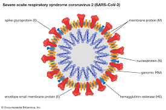

SARS-COV-2
Severe acute respiratory syndrome coronavirus 2 (SARS-CoV-2) is the
strain of coronavirus that causes coronavirus disease 2019 (COVID-19),
the respiratory illness responsible for the COVID-19 pandemic.
Colloquially known as simply the coronavirus, it was previously referred to by
its provisional name, 2019 novel coronavirus (2019-nCoV), and has also been called human
coronavirus 2019 (HCoV-19 or hCoV-19). The World Health Organization declared
the outbreak a Public Health Emergency of International Concern
on 30 January 2020, and a pandemic on 11 March 2020.
SYMPTOMS
Fever is the most common symptom of COVID-19, but is highly variable in
severity and presentation, with some older, immunocompromised, or critically
ill people not having fever at all. In one study, only 44% of
people had fever when they presented to the hospital, while 89% went on
to develop fever at some point during their hospitalization.Other common
symptoms include cough, loss of appetite, fatigue, shortness of
breath, sputum production, and muscle and joint pains. Symptoms such
as nausea, vomiting, and diarrhoea have been observed in varying percentages.
Less common symptoms include sneezing, runny nose, sore throat, and skin lesions.
Favipiravir: This is an oral antiviral drug which was fast tracked
by the Indian Drug Controller but is not yet approved in the EU or US.
Its use should be restricted to mild or moderate infections only. Available
data to support its use is sparse but Indian trials have just been
completed and the results are awaited.
Hydroxychloroquine sulphate (HCQS): We now have compelling data from multiple large
clinical trials including WHO’s SOLIDARITY and the UK’s RECOVERY trials to
categorically say: HCQS does not work. Even Donald Trump may have
stopped taking it by now — and so should you.
CURRENT TREATMENTS
